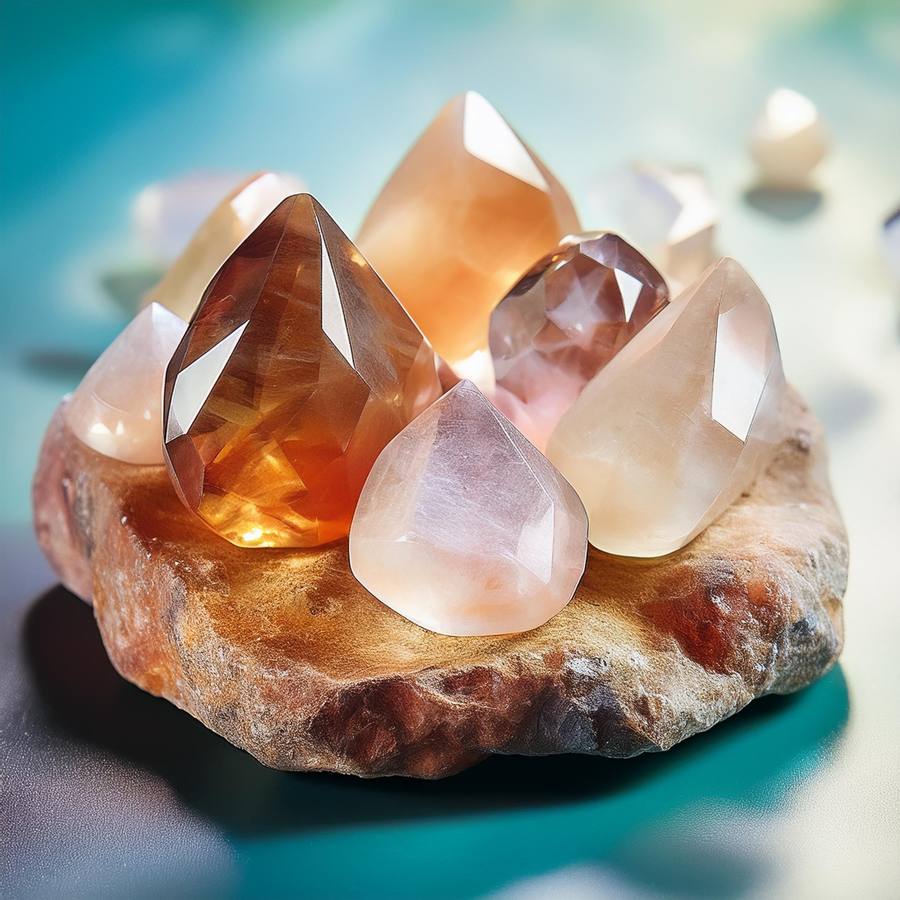
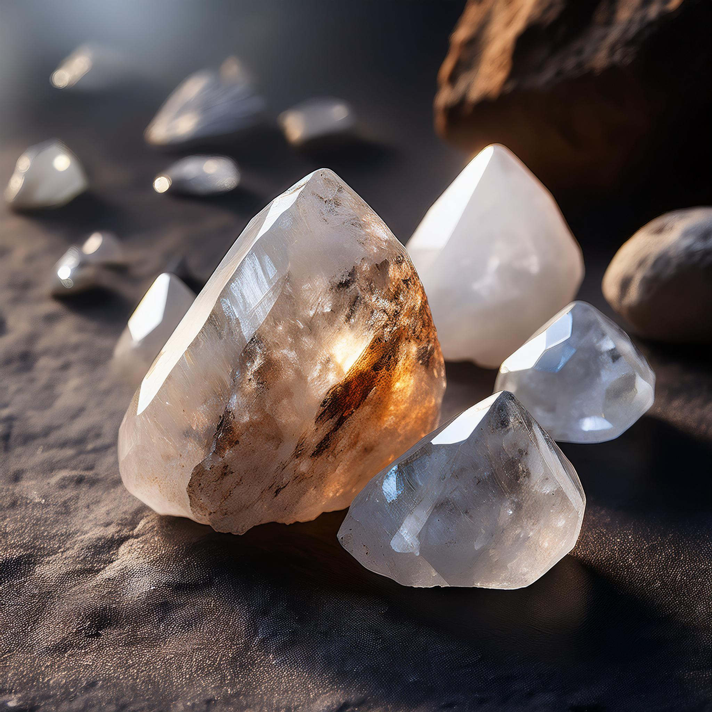
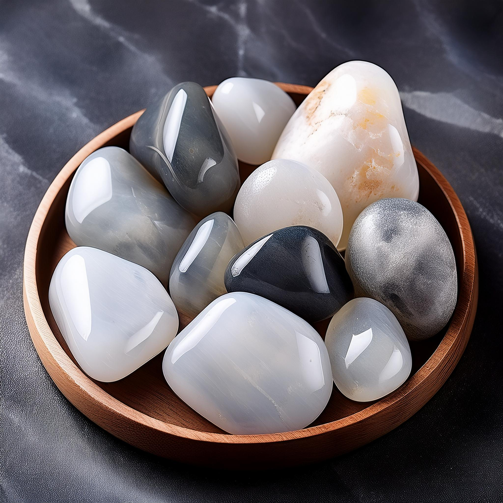
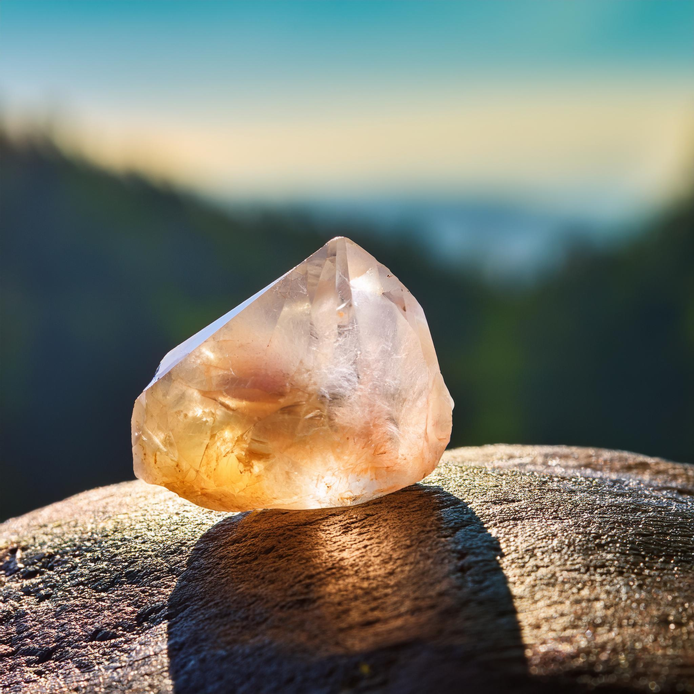
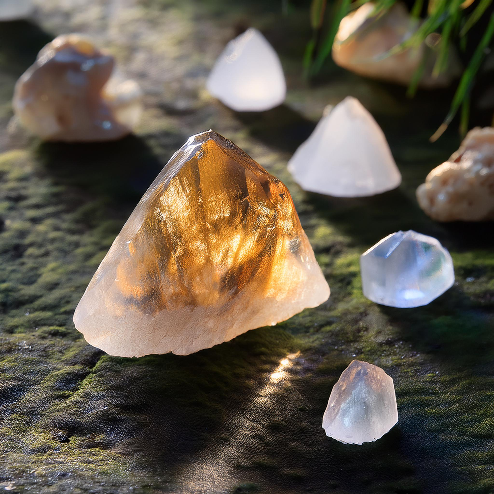
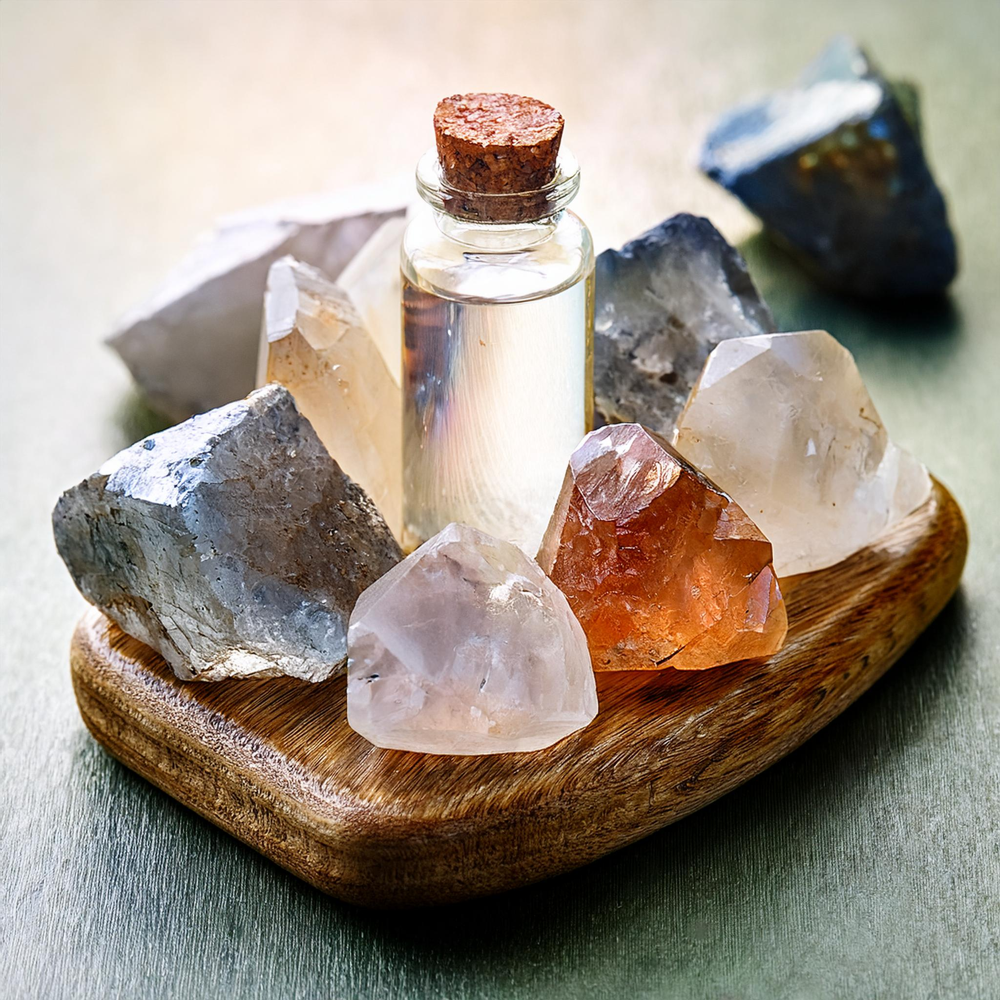
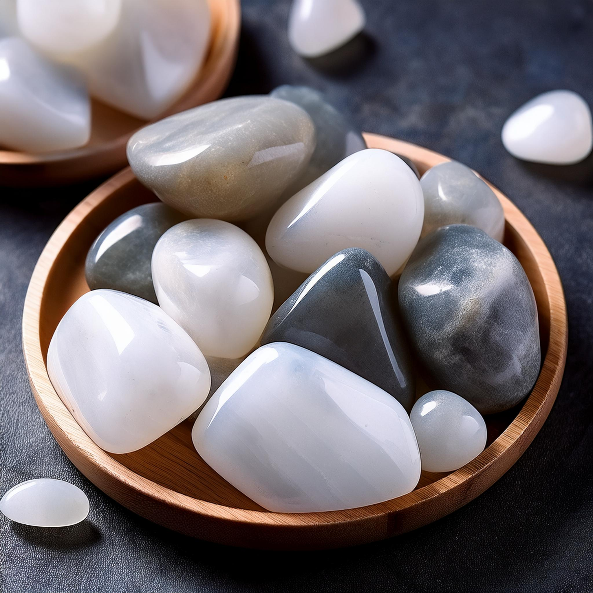

Introducción al Cuarzo Natural
El cuarzo es uno de los minerales más abundantes en la Tierra, conocido por su belleza, durabilidad y propiedades energéticas. Se encuentra en diversas formas y colores, lo que lo convierte en una opción popular tanto en joyería como en prácticas espirituales y de sanación.
Tipos de Cuarzo Natural
1. Cuarzo Transparente (Cuarzo Cristalino)
Características: Incoloro, translúcido o completamente claro.
Propiedades: Se dice que amplifica la energía y es útil para la meditación, la claridad mental y el equilibrio emocional.
Uso: Muy popular en joyería, talismanes y en la sanación energética por su capacidad para armonizar cualquier chakra.
2. Cuarzo Rosa
Características: Su color rosa varía desde un tono suave hasta un rosa más intenso.
Propiedades: Asociado con el amor incondicional, la paz y la curación emocional. Se cree que fomenta el amor propio y mejora las relaciones interpersonales.
Uso: Utilizado en joyería y como piedra de sanación emocional, ideal para colgantes y anillos.

3. Cuarzo Amatista
Características: Varía en tonos de púrpura, desde claros hasta profundos.
Propiedades: Conocido por promover la calma, la protección y la intuición. Se asocia con el equilibrio emocional y la purificación del entorno.
Uso: Ideal para meditar y proteger el hogar. También muy usado en joyas como collares y anillos.
4. Cuarzo Ahumado
Características: Varía desde un marrón claro hasta tonos más oscuros casi negros.
Propiedades: Se dice que ayuda a eliminar la energía negativa, promueve la estabilidad y el aterrizaje emocional.
Uso: Perfecto para personas que buscan protección emocional y estabilidad. Es común en amuletos y talismanes.
5. Cuarzo Citrino
Características: De color amarillo a dorado, brillante y translúcido.
Propiedades: Conocido como la piedra del éxito y la abundancia. Se cree que atrae prosperidad y mejora la confianza en uno mismo.
Uso: Popular en la creación de joyas para atraer prosperidad o como piedra de decoración en oficinas y hogares.
Propiedades Curativas del Cuarzo
El cuarzo ha sido valorado a lo largo de los siglos por sus propiedades curativas. Se cree que actúa como amplificador de energía, lo que ayuda a equilibrar las emociones, mejorar la concentración y limpiar las energías negativas. Cada tipo de cuarzo tiene propiedades específicas, lo que lo convierte en una piedra versátil tanto en joyería como en prácticas espirituales.
Cuidado del Cuarzo Natural
Para mantener tu cuarzo en buen estado, es recomendable limpiarlo regularmente bajo agua corriente o en sal marina para eliminar cualquier energía acumulada. También puedes recargar su energía colocándolo bajo la luz del sol o de la luna llena.
